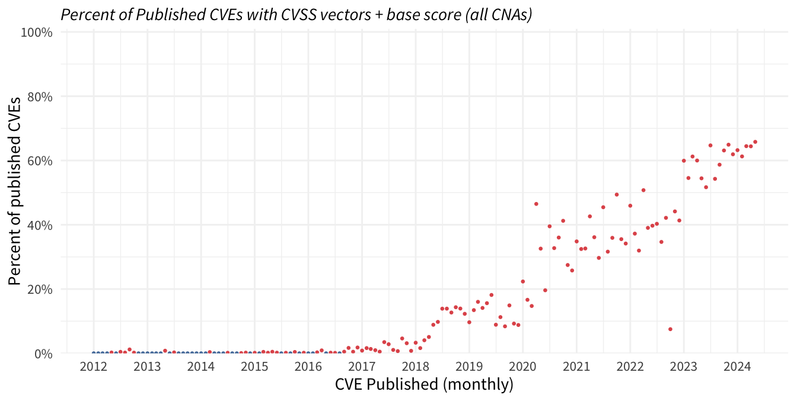
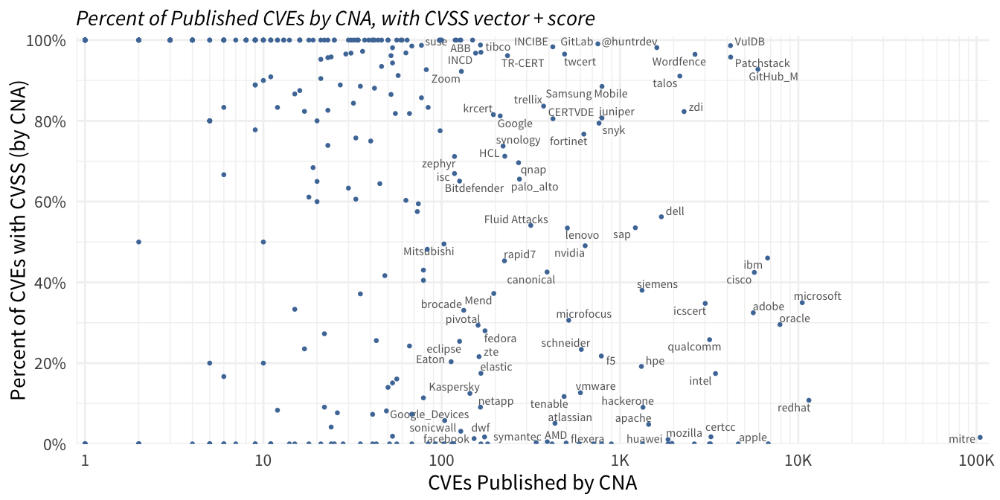
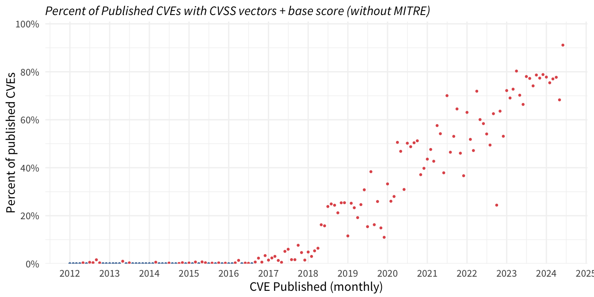
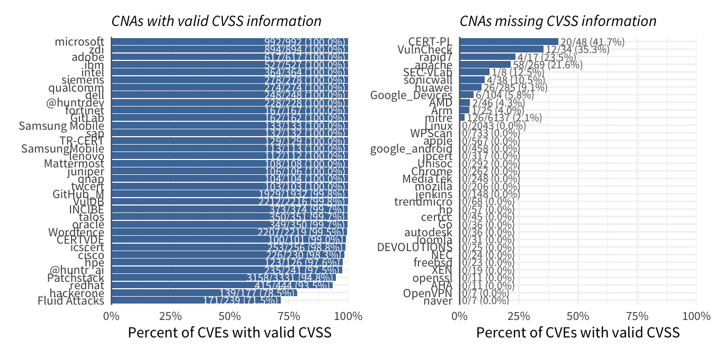
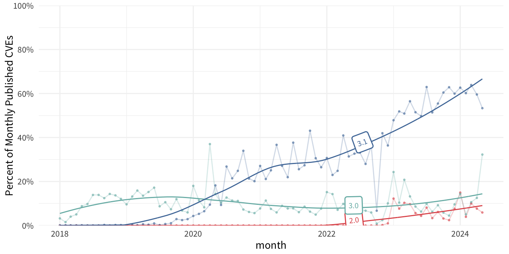
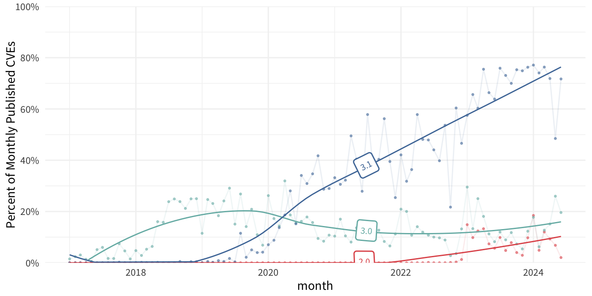

| key | cves | cnas |
|---|---|---|
| metrics.format | 20656 | 256 |
| metrics.cvssV2_0.accessComplexity | 34 | 2 |
| metrics.cvssV2_0.accessVector | 34 | 2 |
| metrics.cvssV2_0.authentication | 34 | 2 |
| metrics.cvssV2_0.availabilityImpact | 34 | 2 |
| metrics.cvssV2_0.baseScore | 3523 | 3 |
| metrics.cvssV2_0.confidentialityImpact | 34 | 2 |
| metrics.cvssV2_0.integrityImpact | 34 | 2 |
| metrics.cvssV2_0.vectorString | 3523 | 3 |
| metrics.cvssV2_0.version | 3523 | 3 |
| metrics.cvssV3_0.attackComplexity | 11395 | 48 |
| metrics.cvssV3_0.attackVector | 11395 | 48 |
| metrics.cvssV3_0.availabilityImpact | 11395 | 48 |
| metrics.cvssV3_0.baseScore | 16135 | 51 |
| metrics.cvssV3_0.baseSeverity | 16135 | 51 |
| metrics.cvssV3_0.confidentialityImpact | 11395 | 48 |
| metrics.cvssV3_0.exploitCodeMaturity | 2314 | 2 |
| metrics.cvssV3_0.integrityImpact | 11395 | 48 |
| metrics.cvssV3_0.privilegesRequired | 11395 | 48 |
| metrics.cvssV3_0.remediationLevel | 2314 | 2 |
| metrics.cvssV3_0.reportConfidence | 2314 | 2 |
| metrics.cvssV3_0.scope | 11395 | 48 |
| metrics.cvssV3_0.temporalScore | 2314 | 2 |
| metrics.cvssV3_0.temporalSeverity | 2314 | 2 |
| metrics.cvssV3_0.userInteraction | 11395 | 48 |
| metrics.cvssV3_0.vectorString | 16135 | 51 |
| metrics.cvssV3_0.version | 16135 | 51 |
| metrics.cvssV3_1.attackComplexity | 35425 | 273 |
| metrics.cvssV3_1.attackVector | 35425 | 273 |
| metrics.cvssV3_1.availabilityImpact | 35425 | 273 |
| metrics.cvssV3_1.availabilityRequirement | 777 | 4 |
| metrics.cvssV3_1.baseScore | 46471 | 278 |
| metrics.cvssV3_1.baseSeverity | 46471 | 278 |
| metrics.cvssV3_1.confidentialityImpact | 35425 | 273 |
| metrics.cvssV3_1.confidentialityRequirement | 777 | 4 |
| metrics.cvssV3_1.environmentalScore | 777 | 4 |
| metrics.cvssV3_1.environmentalSeverity | 777 | 4 |
| metrics.cvssV3_1.exploitCodeMaturity | 1297 | 9 |
| metrics.cvssV3_1.integrityImpact | 35425 | 273 |
| metrics.cvssV3_1.integrityRequirement | 777 | 4 |
| metrics.cvssV3_1.modifiedAttackComplexity | 777 | 4 |
| metrics.cvssV3_1.modifiedAttackVector | 777 | 4 |
| metrics.cvssV3_1.modifiedAvailabilityImpact | 777 | 4 |
| metrics.cvssV3_1.modifiedConfidentialityImpact | 777 | 4 |
| metrics.cvssV3_1.modifiedIntegrityImpact | 777 | 4 |
| metrics.cvssV3_1.modifiedPrivilegesRequired | 777 | 4 |
| metrics.cvssV3_1.modifiedScope | 777 | 4 |
| metrics.cvssV3_1.modifiedUserInteraction | 777 | 4 |
| metrics.cvssV3_1.privilegesRequired | 35425 | 273 |
| metrics.cvssV3_1.remediationLevel | 1297 | 9 |
| metrics.cvssV3_1.reportConfidence | 1297 | 9 |
| metrics.cvssV3_1.scope | 35425 | 273 |
| metrics.cvssV3_1.temporalScore | 1297 | 9 |
| metrics.cvssV3_1.temporalSeverity | 1297 | 9 |
| metrics.cvssV3_1.userInteraction | 35425 | 273 |
| metrics.cvssV3_1.vectorString | 46471 | 278 |
| metrics.cvssV3_1.version | 46471 | 278 |
| metrics.cvssV4_0.Automatable | 219 | 43 |
| metrics.cvssV4_0.Recovery | 219 | 43 |
| metrics.cvssV4_0.Safety | 219 | 43 |
| metrics.cvssV4_0.attackComplexity | 220 | 44 |
| metrics.cvssV4_0.attackRequirements | 220 | 44 |
| metrics.cvssV4_0.attackVector | 220 | 44 |
| metrics.cvssV4_0.baseScore | 698 | 46 |
| metrics.cvssV4_0.baseSeverity | 698 | 46 |
| metrics.cvssV4_0.privilegesRequired | 220 | 44 |
| metrics.cvssV4_0.providerUrgency | 219 | 43 |
| metrics.cvssV4_0.subAvailabilityImpact | 220 | 44 |
| metrics.cvssV4_0.subConfidentialityImpact | 220 | 44 |
| metrics.cvssV4_0.subIntegrityImpact | 220 | 44 |
| metrics.cvssV4_0.userInteraction | 220 | 44 |
| metrics.cvssV4_0.valueDensity | 219 | 43 |
| metrics.cvssV4_0.vectorString | 698 | 46 |
| metrics.cvssV4_0.version | 698 | 46 |
| metrics.cvssV4_0.vulnAvailabilityImpact | 220 | 44 |
| metrics.cvssV4_0.vulnConfidentialityImpact | 220 | 44 |
| metrics.cvssV4_0.vulnIntegrityImpact | 220 | 44 |
| metrics.cvssV4_0.vulnerabilityResponseEffort | 219 | 43 |
| metrics.other.type | 1283 | 12 |
| metrics.scenarios.lang | 18293 | 247 |
| metrics.scenarios.value | 18293 | 247 |
containers.cna.metrics
Count of CVEs and CNAs use of containers.cna.metrics
Percent of Published CVEs with CVSS information by month
Each dot in the plot below is a month and is showing the percent of CVEs published in that month that had at least one complete combination of a CVSS vector string and base score published in the CVE record.

Which CNAs are published more CVSS Vectors?
This looks at the percent of CVEs with at least one valid CVSS record from each CNA and compares against the total number of CVEs from that CNA.

Completeness of CVSS data without MITRE as CNA

Last year of published CVEs:

Proportion of CVSS versions over time

Proportion of CVSS versions over time without MITRE as CNA
